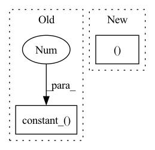

Pattern ID :957

Before Change
elif isinstance(m, nn.Linear):
nn.init.kaiming_normal_(m.weight)
m.weight.data *= 0.1
nn.init.constant_(m.bias, 0)
elif isinstance(m, nn.BatchNorm2d):
nn.init.constant_(m.weight, 1)
nn.init.constant_(m.bias, 0)
After Change
nn.LeakyReLU(negative_slope=0.2, inplace=True)
)
self.avgpool = nn.AdaptiveAvgPool2d((14, 14))
self.fc = nn.Sequential(
nn.Linear(512 * 14 * 14, 1024),
In pattern: SUPERPATTERN
Frequency: 3
Non-data size: 2
Instances
Fragment ID: 3105278
Project Name: lornatang/srgan-pytorch
Commit Name: 5cf838428d2fd83fd2fc39b794fdd8fb82ea91ed
Time: 2020-10-21
Author: liuchangyu1111@gmail.com
File Name: srgan_pytorch/model.py
M Class Name: Discriminator
N Class Name: Discriminator
M Method Name: __init__(1)
N Method Name: __init__(1)
M Parent Class: nn.Module
N Parent Class: nn.Module
M File Name: srgan_pytorch/model.py
N File Name: srgan_pytorch/model.py
M Start Line: 63
M End Line: 85
N Start Line: 63
N End Line: 69
'>
Before Change
nn.init.constant_(m.bias, 0)
elif isinstance(m, nn.BatchNorm2d):
nn.init.constant_(m.weight, 1)
nn.init.constant_(m.bias, 0)
elif isinstance(m, nn.Linear):
nn.init.normal_(m.weight, 0, 0.01)
nn.init.constant_(m.bias, 0)
After Change
nn.LeakyReLU(negative_slope=0.2, inplace=True)
)
self.avgpool = nn.AdaptiveAvgPool2d((14, 14))
self.fc = nn.Sequential(
nn.Linear(512 * 14 * 14, 1024),
'>
Fragment ID: 3105293
Project Name: lornatang/esrgan-pytorch
Commit Name: 91405c6093508419a44d6313646c88ec681a90d2
Time: 2020-10-21
Author: liuchangyu1111@gmail.com
File Name: esrgan_pytorch/model.py
M Class Name: Discriminator
N Class Name: Discriminator
M Method Name: __init__(1)
N Method Name: __init__(1)
M Parent Class: nn.Module
N Parent Class: nn.Module
M File Name: esrgan_pytorch/model.py
N File Name: esrgan_pytorch/model.py
M Start Line: 63
M End Line: 83
N Start Line: 63
N End Line: 69
'>
Before Change
init_eps /= dim_seq
nn.init.uniform_(self.proj.weight, -init_eps, init_eps)
nn.init.constant_(self.proj.bias, 1.)
def forward(self, x, gate_res = None):
device, n = x.device, x.shape[1]
After Change
// parameters
self.use_circulant_matrix = use_circulant_matrix
shape = (dim_seq,) if use_circulant_matrix else (dim_seq, dim_seq)
weight = torch.zeros(shape)
self.weight = nn.Parameter(weight)
'>
Fragment ID: 3105291
Project Name: lucidrains/g-mlp-pytorch
Commit Name: 9b986391ce83028dbf30dcb5f64c8e3cdf5efd6f
Time: 2021-08-13
Author: lucidrains@gmail.com
File Name: g_mlp_pytorch/g_mlp_pytorch.py
M Class Name: SpatialGatingUnit
N Class Name: SpatialGatingUnit
M Method Name: __init__(7)
N Method Name: __init__(6)
M Parent Class: nn.Module
N Parent Class: nn.Module
M File Name: g_mlp_pytorch/g_mlp_pytorch.py
N File Name: g_mlp_pytorch/g_mlp_pytorch.py
M Start Line: 79
M End Line: 85
N Start Line: 75
N End Line: 95